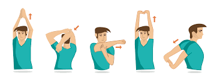

<div id="main" class="bg-[#0b141a] flex flex-col h-full">
    <div class="back absolute w-full h-full top-0 left-0">
    </div>
    <header class="relative box-border flex items-center w-full z-50 bg-[#202c33] py-2.5 px-4">
        <div title="Detalles del perfil" class="flex pr-[15px]">
            <div class="relative w-10 h-10 rounded-full">
                
            </div>
        </div>
        <div class="flex flex-col justify-center cursor-pointer grow" role="button">
            <div class="text-left flex-start leading-normal -m-px">
                <div class="flex grow overflow-hidden text-[16px] leading-5 text-ellipsis whitespace-nowrap text-white">
                    <span>
                        Usuario
                    </span>
                </div>
            </div>
        </div>
        <div class="flex-none ml-5 ">
            <div class="flex items-center text-[#aebac1]">
                <div class="relative flex-none h-full ml-0 rounded-full">
                    <div class="cursor-pointer flex items-center py-2">
                        <span>
                            <svg viewBox="0 0 24 24" height="24" width="24" preserveAspectRatio="xMidYMid meet" class=""
                                version="1.1" x="0px" y="0px" enable-background="new 0 0 24 24" xml:space="preserve">
                                <path fill="currentColor"
                                    d="M15.9,14.3H15L14.7,14c1-1.1,1.6-2.7,1.6-4.3c0-3.7-3-6.7-6.7-6.7S3,6,3,9.7 s3,6.7,6.7,6.7c1.6,0,3.2-0.6,4.3-1.6l0.3,0.3v0.8l5.1,5.1l1.5-1.5L15.9,14.3z M9.7,14.3c-2.6,0-4.6-2.1-4.6-4.6s2.1-4.6,4.6-4.6 s4.6,2.1,4.6,4.6S12.3,14.3,9.7,14.3z">
                                </path>
                            </svg>
                        </span>
                    </div>
                    <span></span>
                </div>
                <div class="relative ml-2.5">
                    <div class="relative h-full rounded-full">
                        <div class="cursor-pointer flex items-center py-2">
                            <span class="mt-0.5">
                                <svg viewBox="0 0 24 24" height="24" width="24" preserveAspectRatio="xMidYMid meet"
                                    class="" version="1.1" x="0px" y="0px" enable-background="new 0 0 24 24"
                                    xml:space="preserve">
                                    <path fill="currentColor"
                                        d="M12,7c1.104,0,2-0.896,2-2c0-1.105-0.895-2-2-2c-1.104,0-2,0.894-2,2 C10,6.105,10.895,7,12,7z M12,9c-1.104,0-2,0.894-2,2c0,1.104,0.895,2,2,2c1.104,0,2-0.896,2-2C13.999,9.895,13.104,9,12,9z M12,15 c-1.104,0-2,0.894-2,2c0,1.104,0.895,2,2,2c1.104,0,2-0.896,2-2C13.999,15.894,13.104,15,12,15z">
                                    </path>
                                </svg>
                            </span>
                        </div>
                    </div>
                </div>
            </div>
        </div>
    </header>
    <span></span>
    <div class="relative flex-1 order-2 z-10">
        <!-- falta por implementar -->
    </div>
    <footer class="p-0 relative box-border flex-none w-full order-3 z-20 bg-[#202c33] min-h-[62px]">
        <div class="relative z-20 box-border flex flex-row flex-end max-w-full min-h-[62px]">
            <div class="flex-[1] w-full min-w-0 min-h-[52px]">
                <span></span>
                <span>
                    <div class="flex flex-end">
                        <div class="box-border flex items-center justify-center min-h-[52px]">
                            <div class="relative flex my-2">
                                <button class="text-[#8696a0]">
                                    <div>
                                        <span>
                                            <svg viewBox="0 0 24 24" height="24" width="24" preserveAspectRatio="xMidYMid meet" class="ekdr8vow dhq51u3o block pointer-events-none w-[26px] h-[26px]" version="1.1" x="0px" y="0px" enable-background="new 0 0 24 24" xml:space="preserve"><path fill="currentColor" d="M9.153,11.603c0.795,0,1.439-0.879,1.439-1.962S9.948,7.679,9.153,7.679 S7.714,8.558,7.714,9.641S8.358,11.603,9.153,11.603z M5.949,12.965c-0.026-0.307-0.131,5.218,6.063,5.551 c6.066-0.25,6.066-5.551,6.066-5.551C12,14.381,5.949,12.965,5.949,12.965z M17.312,14.073c0,0-0.669,1.959-5.051,1.959 c-3.505,0-5.388-1.164-5.607-1.959C6.654,14.073,12.566,15.128,17.312,14.073z M11.804,1.011c-6.195,0-10.826,5.022-10.826,11.217 s4.826,10.761,11.021,10.761S23.02,18.423,23.02,12.228C23.021,6.033,17.999,1.011,11.804,1.011z M12,21.354 c-5.273,0-9.381-3.886-9.381-9.159s3.942-9.548,9.215-9.548s9.548,4.275,9.548,9.548C21.381,17.467,17.273,21.354,12,21.354z  M15.108,11.603c0.795,0,1.439-0.879,1.439-1.962s-0.644-1.962-1.439-1.962s-1.439,0.879-1.439,1.962S14.313,11.603,15.108,11.603z"></path></svg>
                                        </span>
                                    </div>
                                </button>
                            </div>
                            <div></div>
                        </div>
                        <div></div>
                    </div>
                </span>
            </div>
        </div>
        <div></div>
    </footer>
</div>